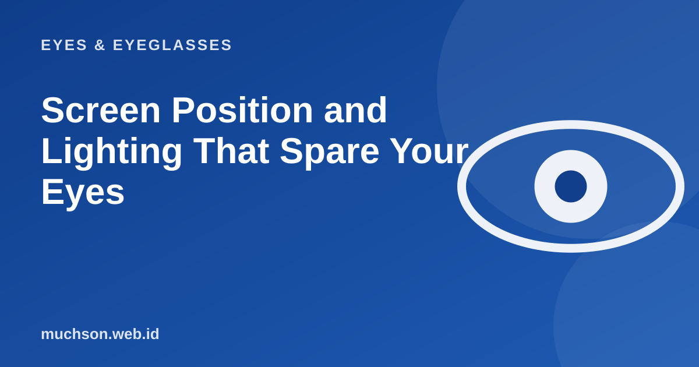

Home › Articles › Eyes & Eyeglasses
Eyes & EyeglassesScreen Position and Lighting That Spare Your Eyes
Many eye complaints come from a badly set-up desk, not from problem eyes. Moving the screen a few centimetres and shifting a lamp often helps more than buying anything.

What a comfortable desk looks like
Text description of the diagram
- Screen: level with or slightly below your eyes: Your gaze tilts down a little, not up
- Distance: about an arm's length (50-70 cm): Far enough to read text without squinting
- Light: from the side, not behind or in front of the screen: Reduces reflections and glare
- Chair: feet flat on the floor: Your back and neck do not lean forward
Set the distance and height of the screen
A screen that is too high makes your eyes open wider, so they dry out faster, and your neck tilts up. A slightly lower screen lets the eyelids cover part of the eye surface, so it stays moister. On a laptop, use a stand and a separate keyboard if you work for long periods.
Glare and room light
- Place the screen at right angles to the window, not facing it or with your back to it.
- Use curtains or a thin blind during the hours of glare.
- Avoid lamps that reflect straight into the screen.
- The room light should be close to the screen brightness. A very bright screen in a dark room forces your eyes to keep readjusting.
- A clean screen also reduces reflections and haze.
Work out a comfortable text size
Desk checklist
FAQ
What is the ideal distance from eyes to screen?
About 50 to 70 cm (an arm's length) for a computer. Phones are usually held closer, so breaks matter even more.
Can the screen be a little higher than my eyes?
It is better not to. A screen that is too high makes your eyes open wide so they dry out quickly. Level or slightly below is more comfortable.
Is a matte screen better?
An anti-glare surface reduces reflections from lamps and windows, so it can be more comfortable in a bright room.